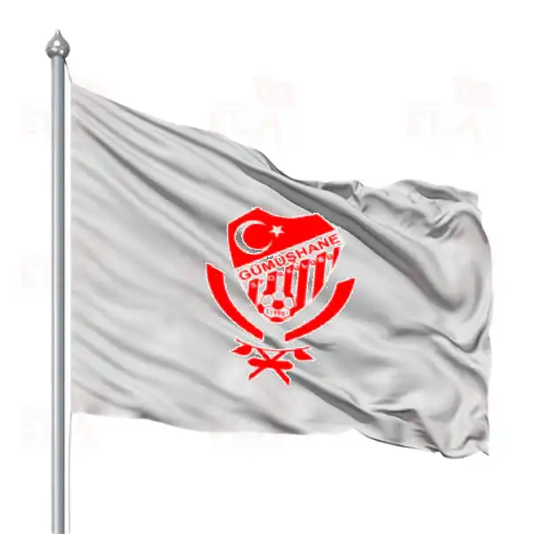

Gümüşhanespor, Gümüşhane merkezli eski Türk futbol kulübüdür.
1984'te kurulan takım 1984-1988 futbol sezonlarında 3. Lig'de mücadele etmiştir.
1987-1988 sezonunda küme düşen takım ilerleyen yıllarda feshedilmiş ve 1990 yılında Gümüşhane
ilini profesyonel liglerde Gümüşhane Köy Hizmetlerispor temsil etmeye başlamıştır.
Şuanda TFF 3.ligde bulunan Gümüşhanespor Ahmet Yavuz ile ligdeki mücadelesine devam etmektedir.

